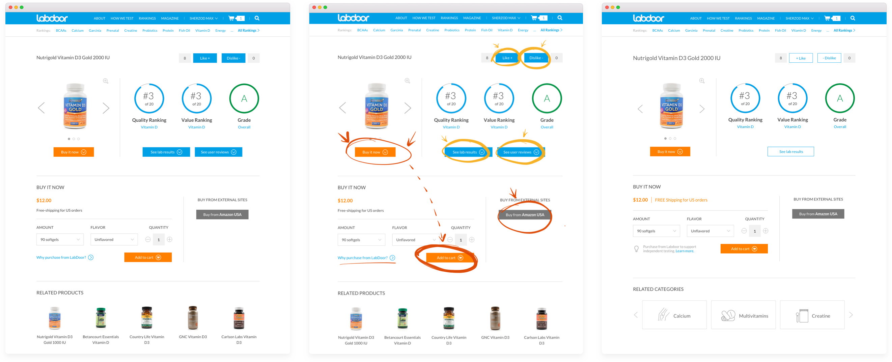
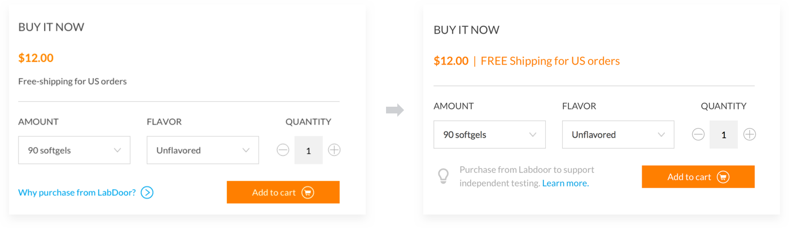
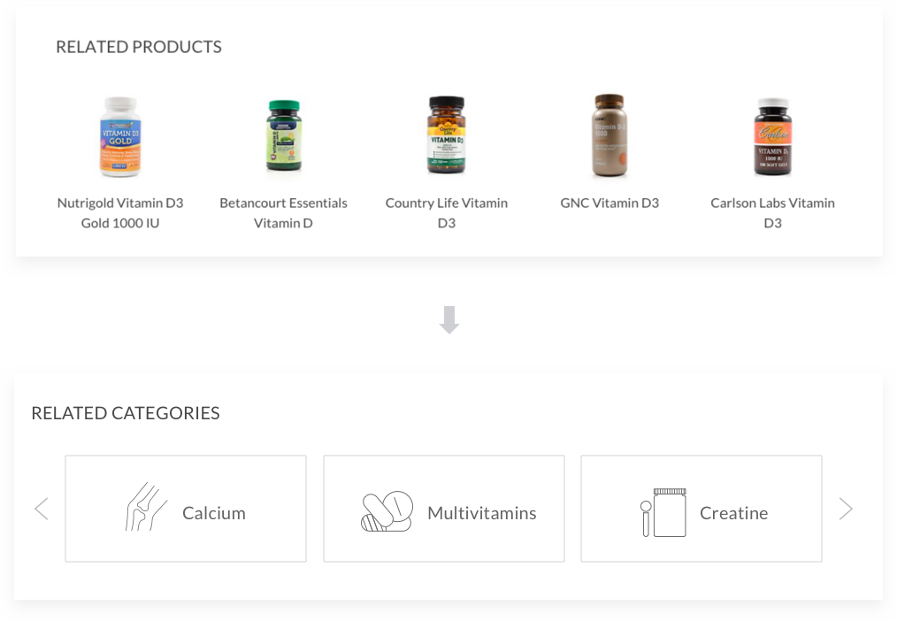
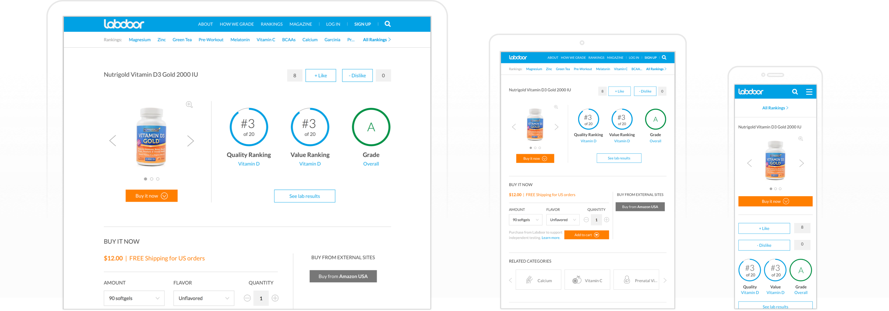
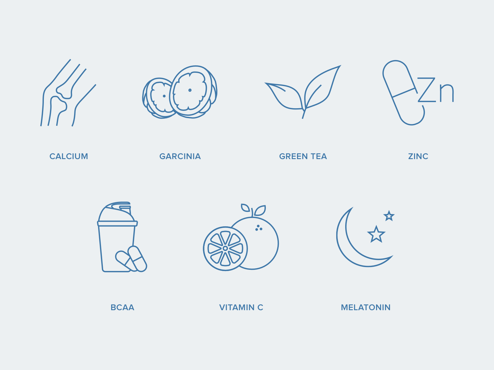
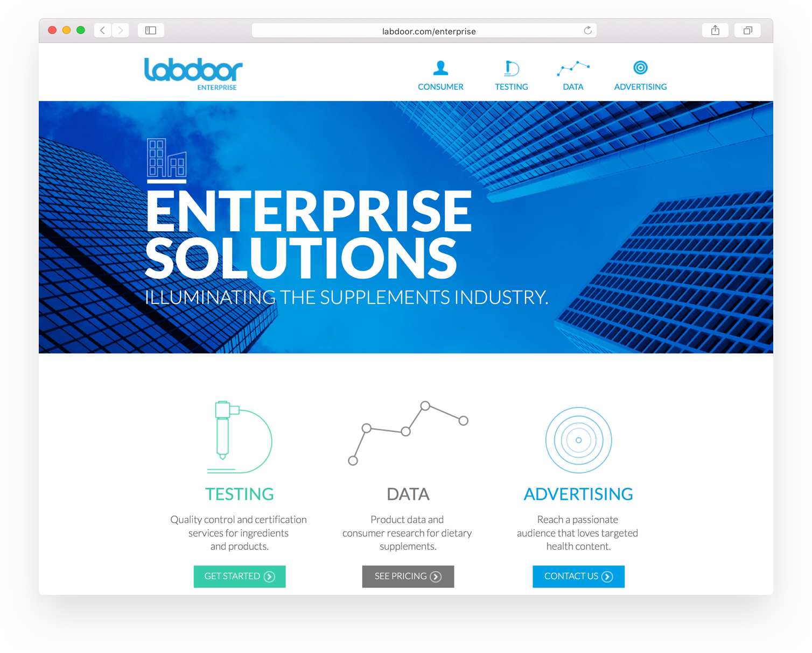

Labdoor
Improving supplements transparency
one pill at a time
About Labdoor
If you’re trying to find a supplement in the US, you may end up with a low quality or harmful product. Supplements are generally considered safe by the FDA, thus have low quality control standard.
Labdoor is a marketplace intended to be the best resource to find, research and buy tested supplements. The company qualifies and ranks supplements in order to help consumers make an informed decision.
At Labdoor I was involved in designing various parts of the product, from redesigning the entire enterprise website and improving the current consumer site to designing logos, infographics and print. It was a fun experience for me because I got to work on a multiple projects around the product rather than focusing on one core experience. The following is a summary of my work while I was at Labdoor.
Current Website Improvements
When I joined, the website was recently redesigned. But as we know, even after a fresh redesign we can still find flaws and shortcomings. The category and product pages felt messy, unfocused and unguided. We investigated further to see the root cause and validated our assumptions through internal and external user feedback. We found a few things that needed to be fixed on our product and category pages.
I noticed our product page had way too many buttons and features. Each button looked like a primary button on the page and called for equal attention. The objective of a primary button should be singular and critically important. Due to engineering and time constraints we were unable to remove all of them with a single update. As a quick fix, we removed the fill from the secondary buttons so they drew less attention to help a user navigate towards prominent actions.

Before → Attention Areas → After
Many people hesitated to buy a product through Labdoor with a higher markup price, so we decided to clarify that section. Instead of asking a question ("Why purchase from Labdoor?") and linking to another page, we decided to clarify and state that the customers would be supporting independent testing.

Additionally, confused people kept asking if we could offer free shipping. Although we wrote “Free shipping” right below the price tag, we needed to ensure that people clearly saw it. While researching a similar interaction in other products, I noticed that most e-commerce websites use “FREE Shipping” — with capitalization for emphasis. Adding capitalization on the same line and switching color really made a difference. Since this change took effect, we haven’t heard of any complaints and confusions.
Based on feedback it was more relevant for people to see Related Categories rather than Related Products on a product page. We've found out that even when a person sees related ranked products she is less likely to explore them and would rather go back to see full list of rankings.

When working on a few projects simultaneously and focusing on details, it’s critical to look at a bigger picture by checking basics such as accessibility and consistency. We always make sure all changes perform well across browsers and mobile devices.

New supplement categories are released every 6-8 weeks. Each one needed new custom icons. We were trying to design each icon to fit the first representation people think of when they think of a particular supplement. For example, if you think of calcium what’s the first thing that pops in your mind?

Enterprise Website
Since I’ve joined, Labdoor grew from 3 million unique yearly visitors to 7 million. As Labdoor grew, we’ve developed new services and new ways companies can test with Labdoor to get their products certified. We also took this opportunity to update the look and feel of Labdoor.

Old Enterprise Website
The goal of the new Labdoor enterprise website is to clearly state testing programs and to encourage a potential client to submit a supplement. After many brainstorms and discussions with our product team we have found the best way to express our new services while being clear.
We spent time understanding the audience and considering various factors and use cases. To name a few considerations:
- What problems does it solve?
- Where are people coming from?
- How did they found out about Labdoor?
- What are their expectations about the product?
- What message are we conveying?
- How can we effectively introduce our brand and the testing options we offer?
- Does the layout and presentation make the page easy to scan? Are we guiding the reader's attention?
- What’s currently missing?
- Why is it better than the current alternative?
Interviewing our current as well as potential clients and getting early feedback answered many of our questions, saved time, and eliminated designing on pure assumptions.

Similar brands that offer supplement certification
Comparative assessment is a great way to find out what customers are expecting to see in a similar product and how competitors present their message.
Labdoor doesn’t have direct competition but has loosely indirect competitors. Key findings from analyzing similar services:
- Web pages are cluttered and hard to navigate. No sense of direction.
- Substantial neglect for visual design and overall consistency.
- The content as well as value proposition is lengthy and obscure. (Maybe so much redundant text helps them establish trust? Our research showed the opposite. 🤔)
- As for customer acquisition strategy it appears that most of them get clients through an established network from the past.
After understanding the requirements and setting priorities it's a good time to start brainstorming and developing possible solutions.
At this point, I usually sketch a map of the site to understand general flow, content structure and see if there is anything we have missed. This is a good time to get feedback from the team regarding outstanding product requirements or content.

Rough map of the website
We've found out that in most cases someone who lands on the "Labdoor for Brands" page already intends to submit their product to test. We just have to describe our benefits and encourage the intent.
We questioned every detail of the current Labdoor Enterprise including its name. We've concluded that "Labdoor Enterprise" sounded a little corporate and that's not the association we want to send to our audience. We've renamed the site to "Labdoor for Brands" so it speaks better to our audience and sends the proper message.
One of the challenges was presenting Labdoor’s Testing and Certification methods in a short but comprehensible way. Not all testing programs are certifications. We wanted to have a clear distinction between the three certifications and one internal testing program. In order to achieve that, I collaborated with our business development team to explore different layouts, as well as experiment with the copy.

Testing Programs layout iterations
As we were iterating, we’ve decided to prioritize certifications over internal testing based on earlier client feedback. Looking back at the market research, I decided that success stories is something we can include on the landing page to demonstrate social proof. Since Labdoor received a lot of positive feedback from the current enterprise clients, a short testimonial would go hand in hand with success stories to establish trust.

Some of the intial iterations I've done for the landing page
I've structured the content on the landing page in way that gradually introduces our service and its benefits, shows the options we're offering, then reinforces the message with social proof and a closing statement. The idea behind that is to spark a potential client's interest and familiarize them with testing programs and their benefits to encourage clients to submit a supplement product for testing.
While diving into visual details I kept in mind the overall look and feel we want to convey as a brand: clean, modern and trustworthy. Therefore I tried to stick with a simple theme and a familiar navigation followed by distinct elements and concise copy. After all, it’s meant to be read by the audience of 30-40 year olds working in the pharma industry.
Labdoor for Brands is still in its process of coming together and has not launched yet, but I can’t wait to see it’s new redesign and the benefits it will offer to supplement manufacturers.
Magazine

A few infogprahics I've designed during my time at Labdoor
Labdoor’s Magazine is an online resource created to educate and inform people about health, nutrition, as well as updates on our website. It’s made in collaboration with the editor and researcher at Labdoor. Along the way we have produced a number of infographics, science researches and data visualizations. Having no previous experience with infographic, it was great not only to learn and practice data visualization design but also to educate myself on many health related topics.
Print
(Yay, I got to practice print design!)
Having not designed print for 5 years it was exciting to get back at it and remind myself how to do it. Working on print makes me appreciate how spoiled we are with pushing digital products without making sure things are done 100% right. Hey, we can always go back and re-do it, then push it live again, right? Print is quite the opposite. Check your work 700 times before sending to print shop. Mistakes are not allowed.
As for the process — it’s somewhat similar to my digital design workflow but as mentioned earlier - the handoff process is quite different. For instance, when working with the brochure, we first needed to understand the message we’re conveying with the brochure, understand the problem and the context. Research the best way to execute, best practices, best ways to structure the content.

Brochure cover iterations
After we’ve decided on copy, content structure, and had a sense for visual direction it was important to iterate and explore to find best layout to present the content. I’ve done most of the work in Illustrator and polished design details with InDesign.

Final results
One of the challenges in designing the brochure was trying to put all the content on limited space. We constantly had to contemplate length of content versus aesthetics. In the end, we decided to reduce the font size and go with full page width lines of text. This compromise was worth it to properly convey the message.
To earn consumer trust, supplement companies reach out to Labdoor to get certification. This is one of the ways Labdoor generates revenue. We already had a small round seal, but recently the company has started offering different types of testing and offering seals for each of these programs. I’ve researched and designed the following supplement and prescription product certification seals. We considered a few variations of the seals that you can see below. We ensured that the seals aligned with Labdoor’s design aesthetics and style.

Making seal iterations and picking the best ones

Final results
Lessons Learned
It’s always great to go back and look the product, see what could’ve been better. In the process, I’ve learned that I should be more proactive and spend more time on research. I’ve also learned a lot of nuances while building a health product such as designing with a diverse audience in mind where everyone has their own complaints and expectations. It’s not easy to please everyone, and since our resources were limited, we had to ruthlessly prioritize what to build next. Building health products requires an enormous amount of trust, and establishing that trust takes time.
While we’ve drastically improved overall growth, currently, one of Labdoor’s biggest challenges is user retention. However, it has to do with the nature of the product. People often don’t go back to buy supplements at the same place they bought them before. If you stop by CVS for office supplies, you might as well get your supplements there too.
You may ask why did I work on infographics, magazine or print? For example, print was necessary because it served as a quick reference on events we attended for manufacturing clients. Magazine serves as an incredible booster for our SEO and it brings people in from social channels. All these small things add up and have a big impact on growth of the product which is the main metric of our success. Sometimes, these things are not very obvious, but I find it's important to not underestimate them but instead evaluate if they contribute to our goals.
I’m excited about the work I’ve done for Labdoor and all the things I’ve learned while I was there. I’m thankful I was able to contribute to its growth and make the product easier to use. It was an honor to work with such a talented and passionate team on a meaningful product that helps people stay healthy.
Stay tuned to see how Labdoor expands into testing cosmetics and evolves into a much more wide-ranging but unified product.